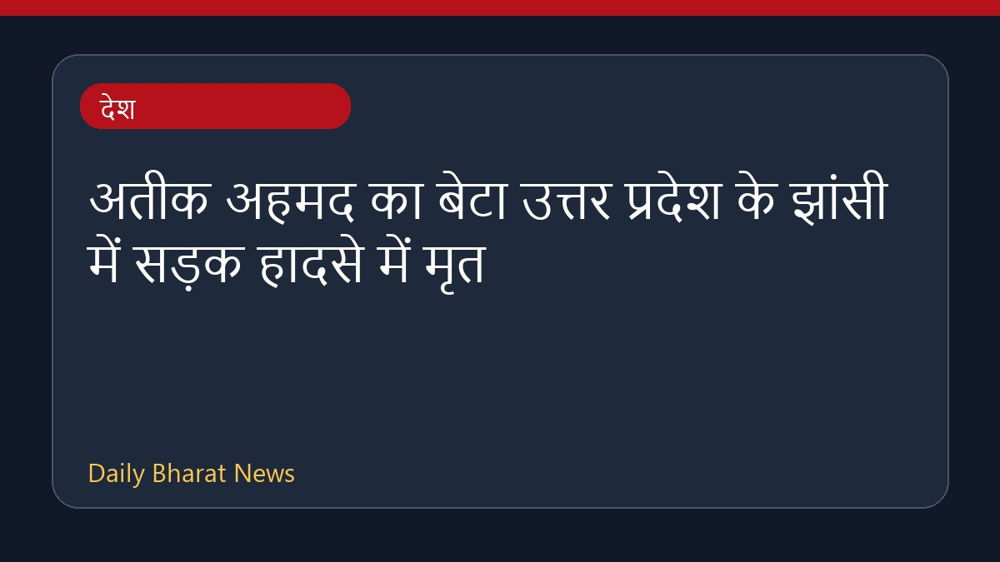

अतीक अहमद का बेटा उत्तर प्रदेश के झांसी में सड़क हादसे में मृत

उत्तर प्रदेश के झांसी में एक तेज रफ्तार कार के डिवाइडर से टकरा जाने के कारण पूर्व गैंगस्टर और राजनेता अतीक अहमद के सबसे छोटे बेटे आबान की मौत हो गई। पुलिस के अनुसार, यह दुर्घटना एक हाई-स्पीड दुर्घटना थी, जिसमें चालक को कथित तौर पर 'मोमेंट्री ब्लैकआउट' का सामना करना पड़ा था। एक प्रत्यक्षदर्शी ने घटना के बाद आबान के अंतिम शब्दों को याद किया, जिसमें उसने मदद की गुहार लगाई थी। इस सड़क हादसे से जुड़ी अन्य विस्तृत जानकारियाँ अभी सीमित हैं, और पुलिस मामले की आगे की जांच कर रही है।
मूल स्रोत: India News Sources
Former gangster-politician Atiq Ahmed's son dies in car crash in UP's Jhansi - timesofindia.indiatimes.com ↗
Former gangster-politician Atiq Ahmed's son dies in car crash in UP's Jhansi - timesofindia.indiatimes.com ↗